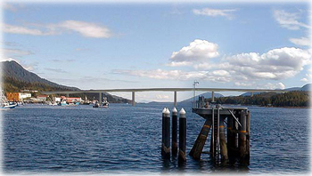

|
Revisiting a Tear in the Iron Curtain: Hungary
On September 19, the Hoover Institution held a reception announcing the opening of a new exhibit called “A Tear in the Iron Curtain: The Hungarian Uprising of 1956” to commemorate the affair’s 50th anniversary. Speaking at the reception were several notables, including award-winning photographer Erich Lessing, whose work forms a cornerstone of the exhibit; Maciej Siekierski, curator of the institute’s East European Collection; Hungarian Consul General Ferenc Bosenbacher, and Austrian Consul-General Martin Weiss. The several speakers briefly informed the audience of the historic event that had drawn the crowd together.
Chinese Films Reflect On China’s Rise
The rise of China is a common topic of discussion among our elites. Nevertheless, I shall quickly run through the statistical formalities: China’s economy grew 10% last year. China’s People’s Liberation Army (PLA) has nearly a million more active troops than we do. China’s population, at 1.3 billion, outnumbers ours by more than 4 to 1.
But statistics alone mean little. We want to know the story behind the numbers. And in documenting the story of China’s rise, it makes sense to pay particular attention at how their films have evolved over the past 20 years.
The Significance of Boring Government
We take pride in our democracy, our expansive franchise, and our ability to elect even some of the most menial and seemingly unelectable jobs—my personal favorite being the coroner, which requires merely a simple majority of votes and, often enough, a brief state medical exam. It’s comforting to know that, in some counties, I can vote for the guy who will mismanage my body in death. Nonetheless, we as Americans rarely show out in force on election day, and when we do, the numbers barely top 60% of the population—a D grade, sort of like Stanford seniors in regard to the recent University of Connecticut and Intercollegiate Studies Institute civics exam.
Comic Controversy: Baron Cohen’s Borat
Comedian Sasha Baron Cohen’s fictitious character, the Kazakhstani reporter Borat, is causing ripples in all sorts of demographics across the world. In his upcoming movie, Borat: Cultural Learnings of America for Make Benefit Glorious Nation of Kazakhstan, Cohen plays a Kazakhstani emissary making a film about America; however, Cohen often plays this character outside of the context of the movie, prompting the illusion that he is in fact a representative of the Kazakhstan government. From riding into his Toronto movie premiere on a peasant-women drawn carriage to his overtly anti-Semitic jokes, Cohen’s inflammatory brand of humor has made the front page of many news organizations this past month.
|
Pub Night’s Postponement Protects Students
Unsurprisingly, the postponement of the traditional senior Pub Night left masses of students griping and grumbling over the administration’s allegedly underhanded efforts to hamper students’ fun. It seems that the Stanford administration has now even outdone the infamous right-wing conspiracy. First, it was the suspension of the Band, then the ban on bikes in the quad, and now the postponement of Senior Night.
Mart Laar on the Flat Tax
The Review recently had the opportunity to interview Mart Laar, the pioneer of Europe’s flat tax revolution. As Prime Minister of Estonia, Mart Laar introduced a flat income tax of 26% in 1994. Since then, nine European countries have adopted the flat tax. This year, Mart Laar was awarded the Cato Institute’s biennial Milton Friedman Prize for Advancing Freedom. He is currently a candidate for Prime Minister

Time to Return to Our Roots
Increasing numbers of Republican incumbents seeking re-election are falling into competitive rankings. Chris Chocola, a sophomore congressman from Indiana known as a strong campaigner, was initially considered safe, but now finds himself lagging in nearly every poll over the past few months to Democratic challenger Joe Donnelly. Rep. Jim Gerlach, who narrowly defeated Democrat Lois Murphy with 51% in a suburban Philadelphia district in 2004, is beginning to fall into an underdog status in this year’s re-match.
The Key to Unlocking Iran
In our present-day world, where terrorism is at the forefront of security concerns, nuclear technology and acquisition thereof is at the forefront of America’s defensive strategy. President Bush gave a speech to the United Nations General Assembly on September 19 reiterating the U.S.’s firm stance to continue fighting for freedom and against terrorism. He specifically spoke to people of countries or regions in turmoil, particularly Iran.
Editor's Note: Wikipedia Wars
Just this last week, Business Manager Navin Kadaba and I discovered that a Wikipedia user scheduled the article on our newspaper for deletion. The user, who maintains membership in a Wikipedia “Counter-Propaganda Unit,” asserted that the article about The Stanford Review was “non-notable” and part of a collection of self-serving articles only intended to promote World Ahead Publishing, a company started by a Review alumnus.
Snow Patrol: Eyes Open
I’ve never liked the label “alternative rock” much. It’s not so much that it’s vague and no longer relevant in its meaning. It just doesn’t roll off the tongue as well as “hyphy” or “krunk” or even “electro-emo-new-age” does. I guess that’s why there seems to be a new word for the same, generic, 4-chord alternative rock every year. And so, when I first heard Snow Patrol’s previous effort, Final Straw, I was pretty much blown away. They were melodic, yet not poppy enough to sound like a McDonald’s jingle. Their music was powerful, yet not so much as to sound like every other “she tore my heart out” band of the hour.
|